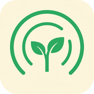

긍정 메아리
🌅 오늘의 아침 확언
"나는 매일 모든 면에서 점점 더 좋아지고 있다."
1
2
3
마이크를 눌러 소리 내어 읽어보세요
🎙️
오늘의 목소리 타임캡슐
일치도
0%
(80% 이상)
연속 달성
0일
이달의 달성
0일
이달의 마음
-
2026년 9월
일월화수목금토
🏅 3회 달성
·
💮 부분 달성
·
💭 마음 기록
🌳 나의 긍정 나무
레벨 1 · 발아🫘
🌸 화사한 벚꽃나무
2배 성장 영양제
👑 PRO
하루 1세트 이상 실천 시 +1일 추가 성장
하루 3대 루틴 확언 현황
펼치기 ▾